PayU dla Shopware 6 — instrukcja konfiguracji
Bramka płatności PayU by CREHLER — krok po kroku: od danych z panelu PayU po gotowe płatności w sklepie.
ℹ️ Instalację wtyczki (Composer lub ZIP) opisuje Instrukcja instalacji. Ten dokument zakłada, że wtyczka jest już zainstalowana i aktywna.
Zanim zaczniesz¶
Potrzebujesz:
- aktywnego konta PayU z danymi punktu płatności (do płatności produkcyjnych) lub konta sandbox (do testów),
- sklepu Shopware z kanałem sprzedaży obsługującym walutę PLN,
- zainstalowanej i aktywnej wtyczki Bramka płatności PayU by CREHLER.
💡 Najpierw testy. Zalecamy skonfigurowanie i przetestowanie płatności na danych sandbox, a dopiero potem przełączenie na produkcję.
Krok 1 — Pobierz dane z panelu PayU¶
Zaloguj się do Panelu zarządzania PayU (panel produkcyjny lub panel sandbox). Dane punktu płatności znajdziesz w sekcji Płatności elektroniczne → Moje sklepy. Masz dwie ścieżki — w zależności od tego, czy dodajesz nowy sklep, czy korzystasz z istniejącego.
Wariant A — Dodaj nowy sklep¶
- W panelu PayU wejdź w Płatności elektroniczne → Moje sklepy → Dodaj sklep.
- Krok 1 — dane sklepu: podaj adres i nazwę sklepu.
- Krok 2 — sposób integracji: wybierz REST API (Checkout) i podaj nazwę punktu płatności.
- Krok 3 — dane dostępowe: skopiuj cztery wartości potrzebne we wtyczce (tabela niżej).
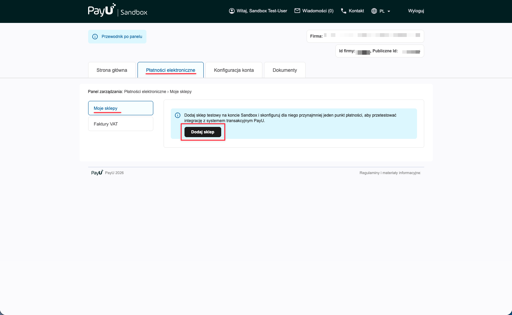
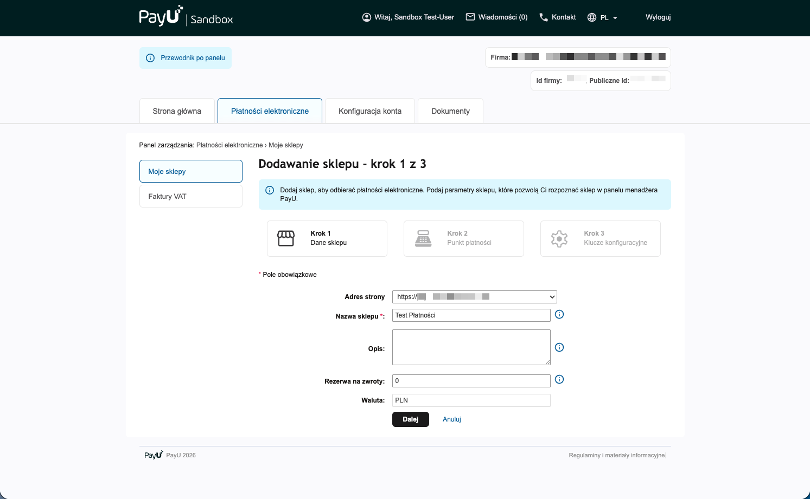
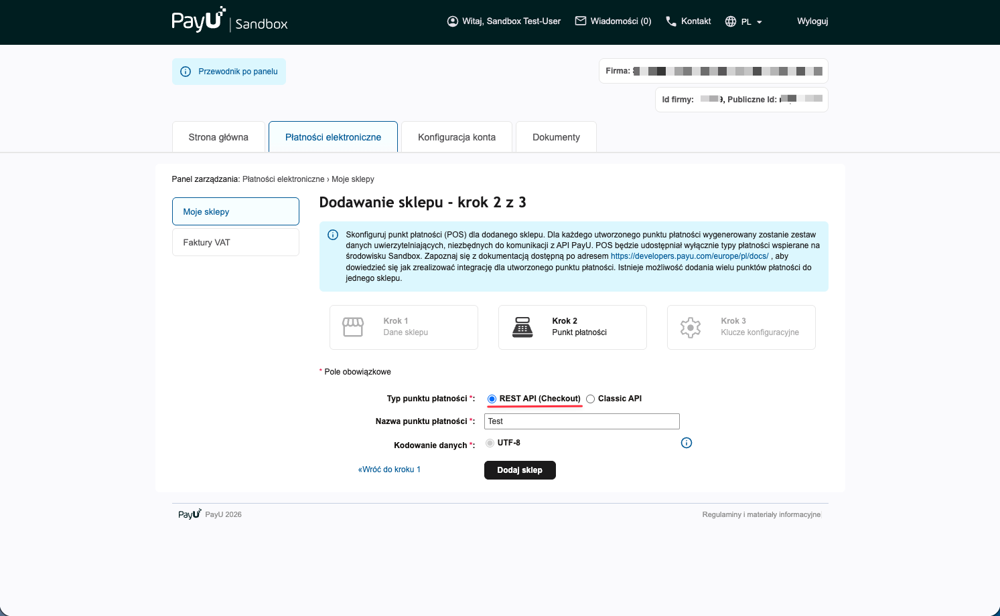
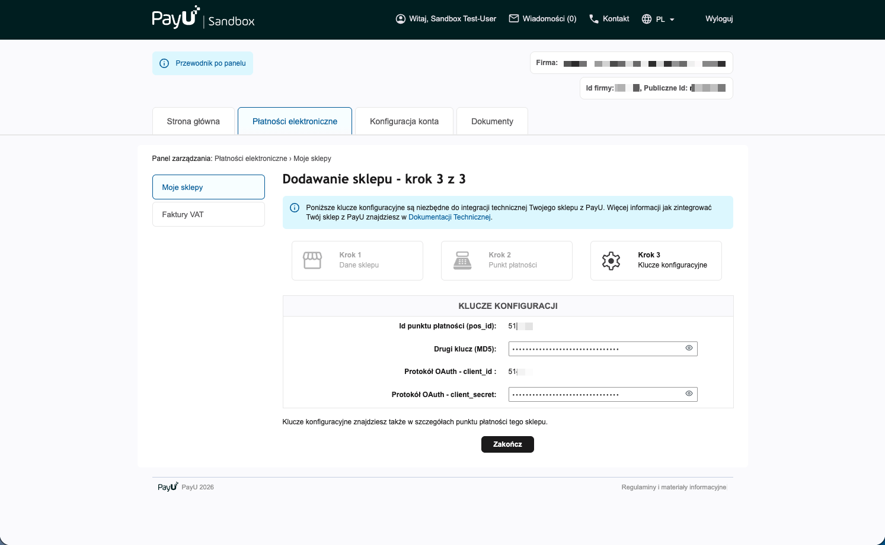
Wariant B — Istniejący sklep¶
- W panelu PayU wejdź w Płatności elektroniczne → Moje sklepy i przy wybranym sklepie kliknij „Edytuj".
- Przejdź do zakładki Punkty płatności, przy wybranym punkcie kliknij „Edytuj", a następnie „Zapisz zmiany".
- Po zapisaniu panel wyświetli dane dostępowe punktu płatności (tabela niżej).
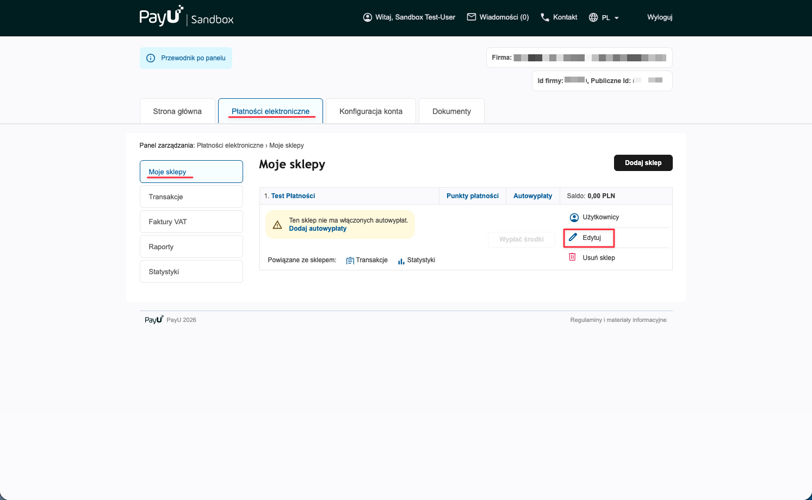
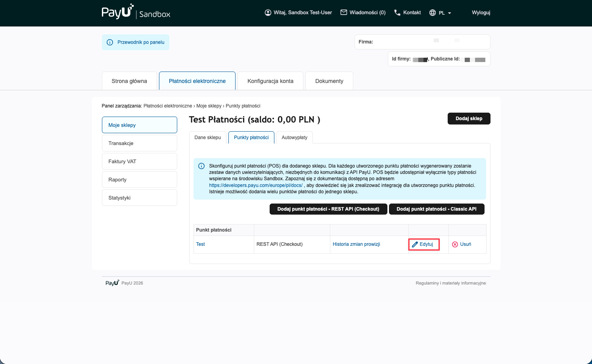
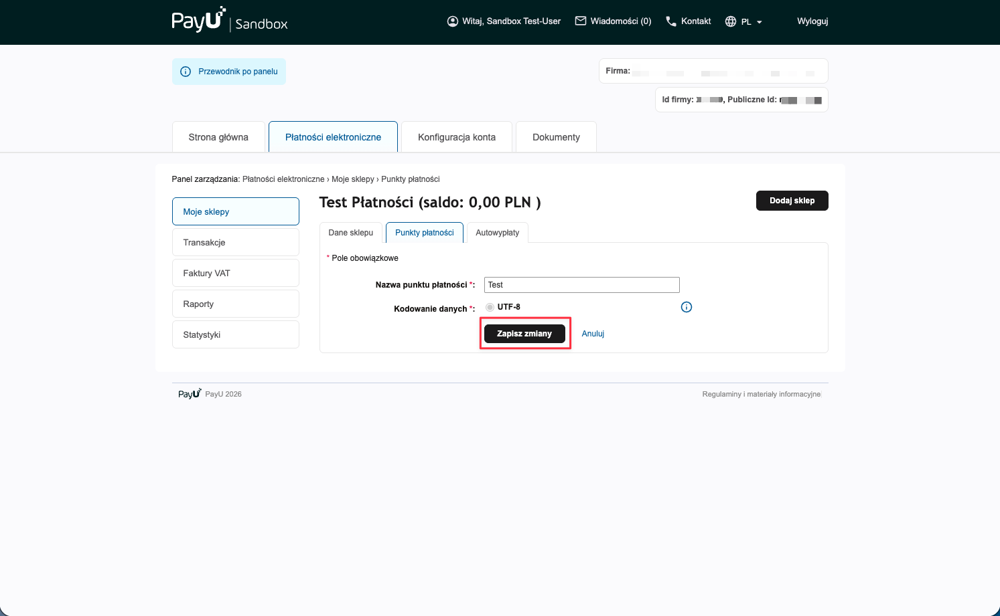
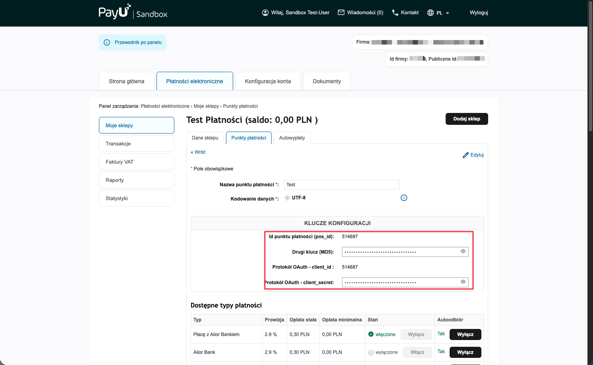
Dane do skopiowania¶
| Dane w panelu PayU | Do czego służy |
|---|---|
| Id punktu płatności (pos_id) | identyfikuje punkt płatności w żądaniach do PayU |
| Drugi klucz (MD5) | wyliczanie i weryfikacja podpisu powiadomień (webhooków) o statusie płatności |
| Protokół OAuth - client_id | uwierzytelnianie wywołań API (zwykle równe pos_id) |
| Protokół OAuth - client_secret | sekret OAuth do uwierzytelniania API |
Te cztery wartości przenosisz 1:1 do konfiguracji wtyczki w Shopware (Krok 2) — pola w panelu PayU i we wtyczce nazywają się tak samo.
🧪 Sandbox: tę samą ścieżkę przejdziesz w panelu sandbox PayU — daje osobne wartości (pos_id / MD5 / client_id / client_secret). Wpisuje się je w osobną kartę „Konfiguracja Sandbox" w konfiguracji wtyczki.
Krok 2 — Wpisz dane w konfiguracji wtyczki¶
W panelu Shopware przejdź do Rozszerzenia → Moje rozszerzenia, znajdź Bramka płatności PayU by CREHLER (musi być włączona — przełącznik po lewej) i kliknij „Skonfiguruj".
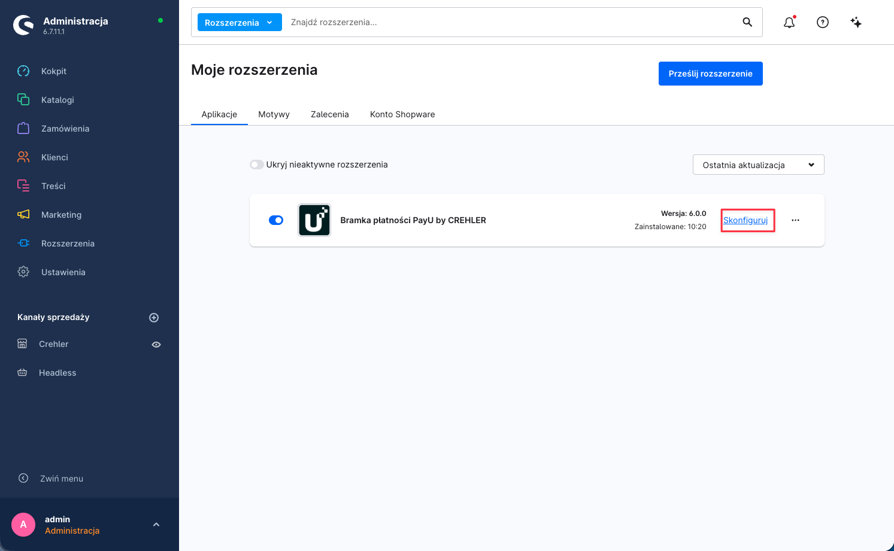
2a. Dane produkcyjne (Konfiguracja Produkcyjna)¶
Wypełnij kartę Konfiguracja Produkcyjna wartościami z Kroku 1:
| Pole w konfiguracji | Wartość z panelu PayU |
|---|---|
| Id punktu płatności (pos_id) | PosId punktu płatności |
| Drugi klucz (MD5) | drugi klucz (MD5) |
| Protokół OAuth - client_id | client_id (protokół OAuth) |
| Protokół OAuth - client_secret | client_secret (protokół OAuth) |
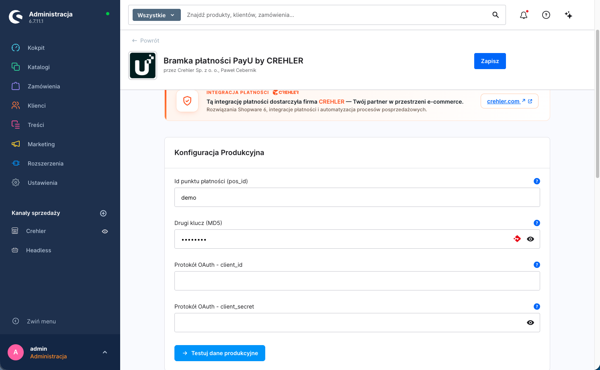
⚠️ Wybór kanału sprzedaży. U góry konfiguracji znajduje się przełącznik kanału sprzedaży. Ustawienia możesz zapisać globalnie („Wszystkie kanały sprzedaży") lub osobno dla wybranego kanału. Jeśli korzystasz z kilku kanałów z różnymi punktami płatności PayU — ustaw dane per kanał.
🛑 Test połączenia NIE zapisuje danych! Przycisk testu pod kartą jedynie sprawdza poprawność wpisanych danych — nie zapisuje ich. Aby zachować dane, po teście osobno kliknij „Zapisz" (prawy górny róg). Wyjście lub odświeżenie konfiguracji bez zapisania spowoduje utratę wpisanych danych.
2b. Dane sandbox (Konfiguracja Sandbox)¶
Aby płacić na koncie testowym, włącz Włącz Sandbox i wypełnij kartę Konfiguracja Sandbox danymi z panelu sandbox PayU. Gdy tryb sandbox jest włączony, wtyczka używa danych sandbox zamiast produkcyjnych.
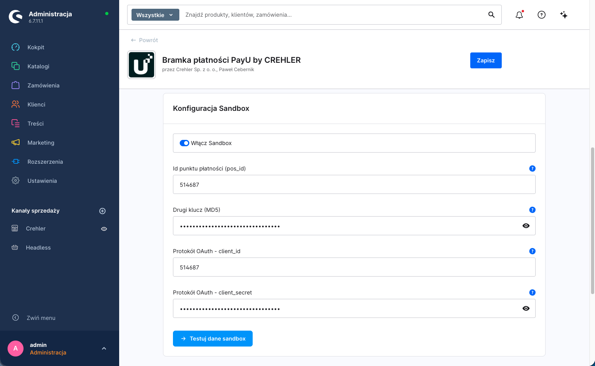
🛑 Test połączenia NIE zapisuje danych! Tak samo jak przy danych produkcyjnych — przycisk testu tylko weryfikuje dane sandbox. Aby je zachować, po teście osobno kliknij „Zapisz" (prawy górny róg).
2c. Przetestuj dane¶
Pod każdą kartą znajduje się przycisk testu połączenia. Kliknij go po wpisaniu danych — wtyczka połączy się z PayU i potwierdzi, że dane są poprawne.
🛑 Pamiętaj: test to nie zapis. Kliknięcie przycisku testu nie zapisuje wpisanych danych — sprawdza je tylko. Dopiero „Zapisz" (prawy górny róg) utrwala konfigurację. Wykonaj zapis osobno po udanym teście, zarówno dla danych produkcyjnych, jak i sandbox.
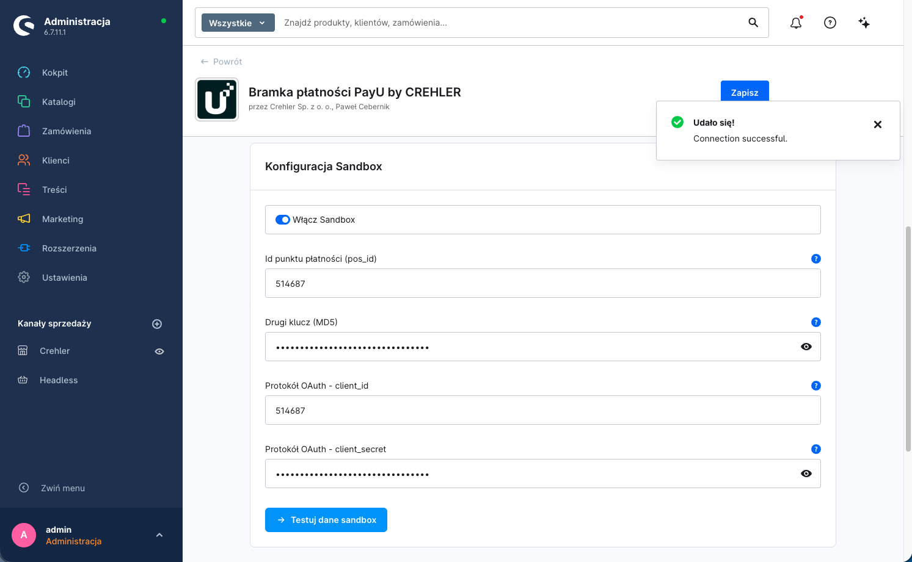
Krok 3 — Przypisz płatności do kanału sprzedaży¶
Aby metody PayU (BLIK, karta, przelew, e-portfel, raty) były widoczne w checkout, muszą być aktywne i przypisane do kanału sprzedaży.
3a. Aktywuj metody płatności¶
Ustawienia → Metody płatności — upewnij się, że metody PayU są aktywne (przełącznik „Aktywny"). Wtyczka dodaje: Karta, BLIK, Przelew online (pay-by-link), E-portfel i Płatności odroczone — każda opisana „… Bramka płatności PayU by CREHLER".
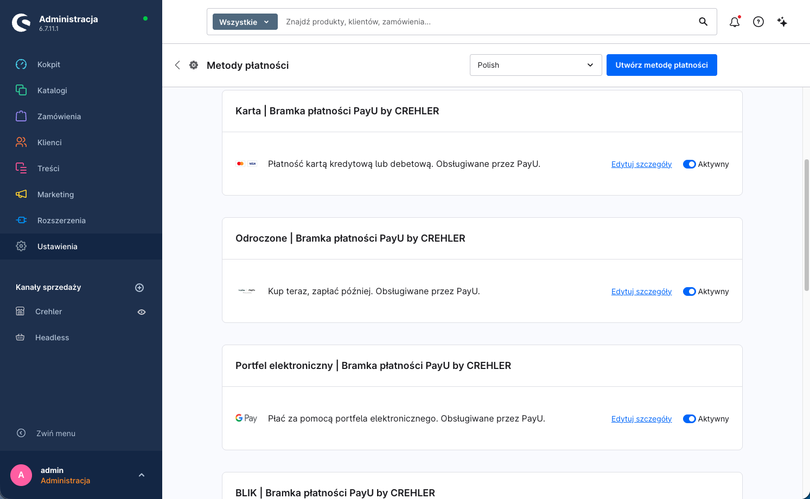
3b. Dodaj metody do kanału sprzedaży¶
W menu po lewej (sekcja Kanały sprzedaży) wybierz swój kanał. W sekcji Płatność i wysyłka → pole Metody płatności dodaj metody PayU, a w polu Standardowa metoda płatności możesz ustawić jedną z nich jako domyślną. Upewnij się też, że Standardowa waluta to Złoty (PLN). Zapisz.
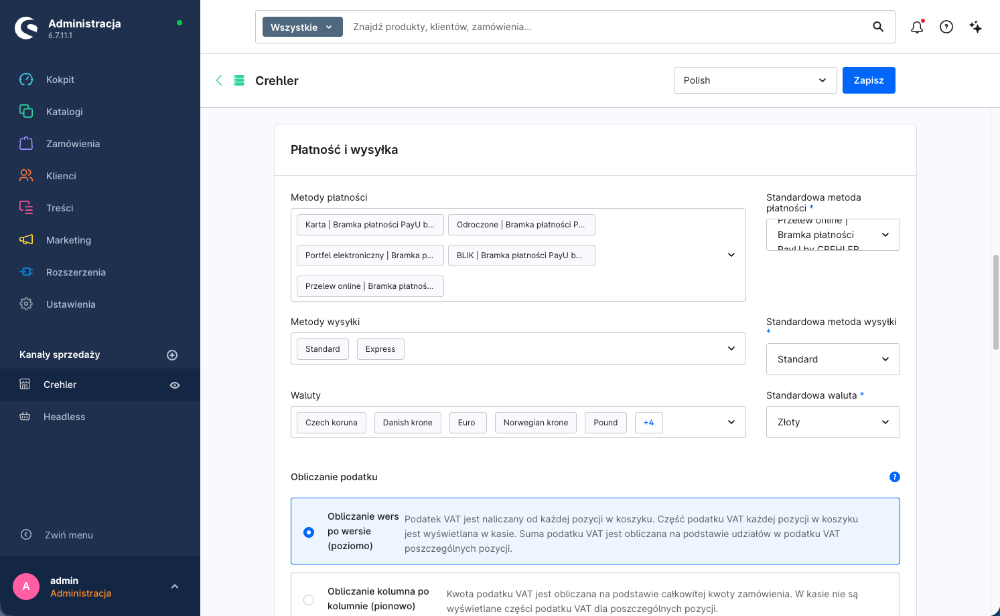
💡 Jeśli metoda nie pojawia się w checkout, sprawdź: czy jest aktywna (3a), czy dodana do kanału (3b), czy waluta koszyka to PLN oraz czy koszyk/kraj spełnia ewentualne reguły dostępności.
Krok 4 — Konfiguracja płatności kartą¶
Płatność kartą w PayU działa domyślnie w modelu przekierowania na bezpieczną stronę PayU — klient wpisuje dane karty (numer, datę, CVC) na stronie PayU, nigdy w checkout Twojego sklepu. Wtyczka dokłada przy tym do konfiguracji wspólną kartę Ustawienia wyświetlania, w której decydujesz o wyglądzie checkoutu.
| Opcja | Działanie | Domyślnie |
|---|---|---|
| Osadź formularz karty w checkout | Wł.: w checkout pojawia się sekcja karty PayU — wybór zapisanej karty, opcja „Zapisz kartę" i informacja o przekierowaniu. Wył.: klient od razu przechodzi ścieżką przekierowania. Dane karty są przejmowane przez bezpieczny mechanizm PayU — wtyczka nie zapisuje numeru karty/CVC po stronie sklepu. | Wyłączone |
| Pozycja pola kodu BLIK | Gdzie pokazać pole na kod BLIK: Na stronie potwierdzenia zamówienia / Na osobnej stronie po złożeniu / Ukryte (przekierowanie do bramki). | Na stronie potwierdzenia |
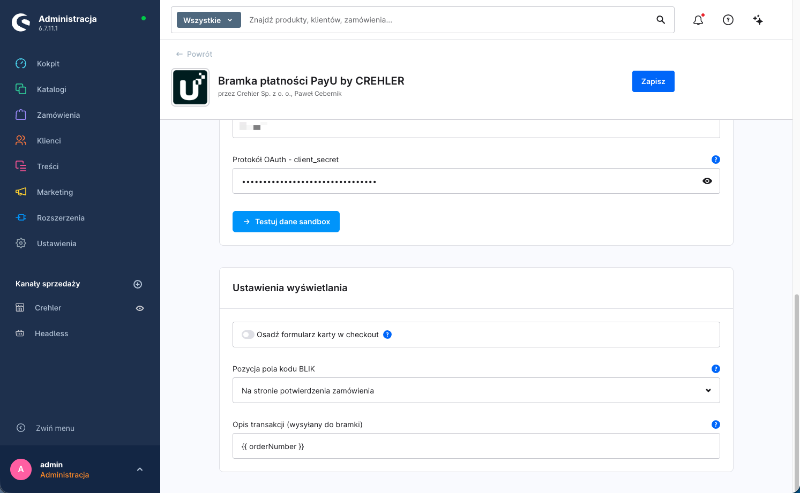
Jak przebiega płatność kartą¶
Po kliknięciu „Zamawiam i płacę" klient zostaje przekierowany na bezpieczną stronę PayU, gdzie wpisuje dane karty i przechodzi ewentualne 3-D Secure. Po zakończeniu wraca do sklepu, a status zamówienia aktualizuje się po potwierdzeniu od bramki.
🔐 Zgodność (PCI DSS). Dane karty są wpisywane po stronie PayU (przekierowanie na stronę bramki lub bezpieczny mechanizm tokenizacji PayU) i nie trafiają na serwer Twojego sklepu. To najniższy zakres wymogów PCI DSS — typowo SAQ A. W praktyce zadbaj jedynie o to, by sklep działał po HTTPS.
Zapisane karty (tokeny)¶
Jeśli klient zaznaczy „Zapisz kartę", PayU zapamiętuje kartę jako token powiązany z kontem klienta. Przy kolejnych zakupach klient wybiera zapisaną kartę z listy w checkout — płatność nadal finalizuje się po stronie PayU (token zamiast ponownego wpisywania danych).
Krok 5 — Test płatności¶
- Włącz Włącz Sandbox i zapisz konfigurację (Krok 2b).
- Dodaj produkt do koszyka (waluta PLN) i przejdź do checkout.
- Wybierz metodę PayU (np. BLIK) i dokończ zamówienie zgodnie z danymi testowymi PayU (poniżej).
- Sprawdź w panelu Shopware, czy status płatności zamówienia zmienił się na Opłacone po potwierdzeniu.
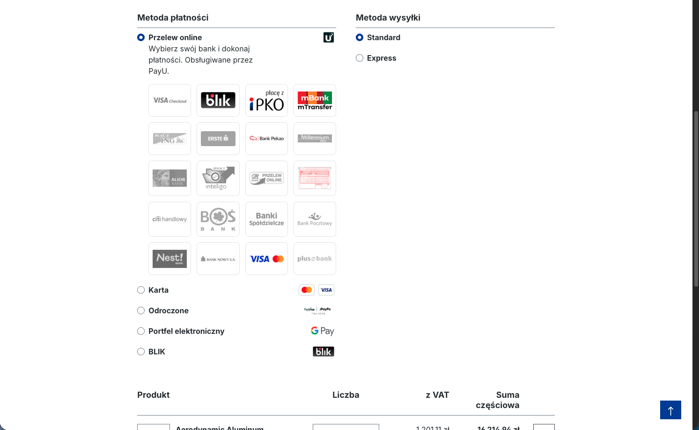
↩️ Zwroty wykonasz później z poziomu zamówienia w panelu Shopware — pełne lub częściowe, bez logowania do panelu PayU. Szczegóły: Zwroty płatności.
Dane testowe (sandbox)¶
Środowisko sandbox PayU pozwala przejść pełną ścieżkę płatności bez realnych pieniędzy. Konto sandbox założysz w secure.snd.payu.com. Komplet aktualnych danych testowych (karty, 3-D Secure, scenariusze) znajdziesz w dokumentacji deweloperskiej PayU.
Karta — numer testowy¶
| Numer karty | CVV | Data ważności | Wynik |
|---|---|---|---|
4444 3333 2222 1111 |
123 |
dowolna przyszła | płatność udana (bez 3-D Secure) |
5434 0212 0000 1211 |
123 |
dowolna przyszła | płatność udana (Mastercard) |
BLIK (sandbox)¶
W środowisku sandbox autoryzację BLIK realizujesz 6-cyfrowym kodem testowym zgodnie z dokumentacją PayU — symulator pozwala wymusić powodzenie lub odrzucenie płatności.
ℹ️ Dane testowe pochodzą z oficjalnej dokumentacji PayU i mogą się zmieniać. Aktualną, pełną listę (karty, kody 3-D Secure, scenariusze BLIK i pay-by-link) znajdziesz na developers.payu.com.
⚠️ Po testach wyłącz tryb sandbox w konfiguracji wtyczki, aby płatności produkcyjne były realizowane poprawnie.
Powiązane artykuły¶
- Integracja przez Store API (headless) — endpointy Store API (BLIK Level 0, sub-metody banków, sprawdzanie statusu) i przykłady użycia.
- Zwroty płatności — pełne i częściowe zwroty z poziomu panelu Shopware.
Wsparcie¶
Masz pytanie lub problem z konfiguracją? Napisz do nas: support@crehler.com
Bramka płatności PayU by CREHLER · crehler.com